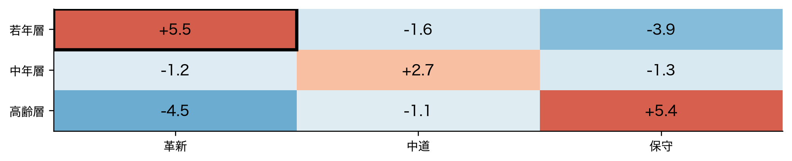
ズレを比べられるようにする（最終回）
前回、若年層×革新のセルに残差 +5.5 が出ました。会議でこう聞かれます。

「5.5 は大きいんですか」——比べる物差しが要ります。それが今日の主題です。
第14回は分割表を地図にしました。今回は個々のセルに戻ります。
→ 今日はズレの測り方そのものを主題にします。
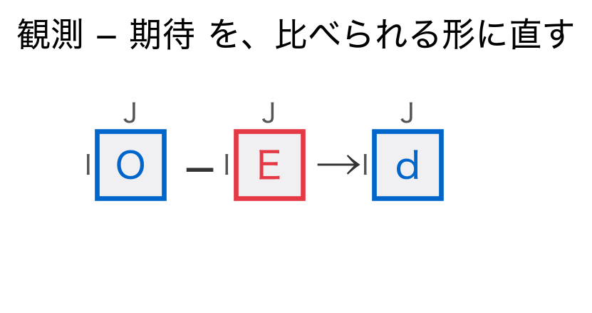
行も列もカテゴリ。セルの中身は人数です。この四角形のズレを扱います。
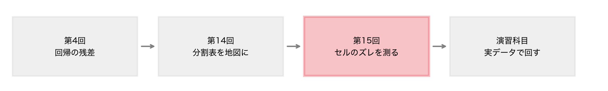
第14回は全体の構造を見ました。今回は1つのセルを見ます。
E_{ij} = \frac{r_i\,c_j}{N}
読み方：期待度数は、行の合計と列の合計を掛けて、全体の合計で割ったもの。
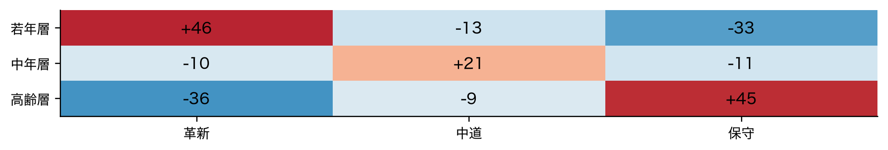
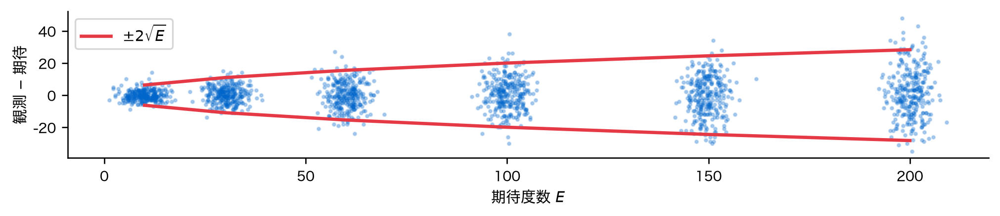
ばらつきの幅は \sqrt{E} に比例して広がります。生の差では比べられません。
Z_{ij}=\frac{O_{ij}-E_{ij}}{\sqrt{E_{ij}}}
読み方：観測と期待の差を、期待度数の平方根で割る。ばらつきの広がりを打ち消す。
標準化残差の分散 = 0.445
|値|>2 の割合 = 0.3%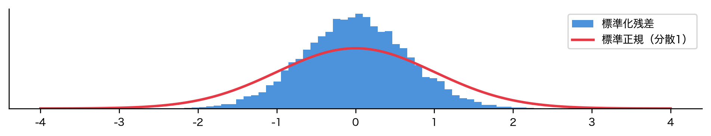
1 になっていません。 山が細すぎます。±2 を超えるのは 0.3% だけです。
分散をセルごとに測ると、さらに問題が見えます。
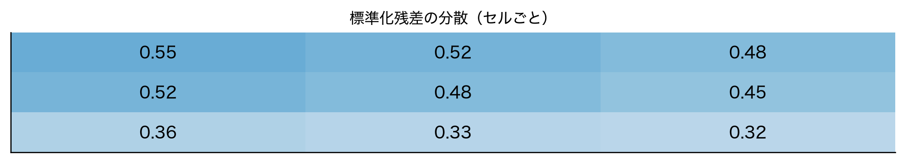
0.30 から 0.60 までバラバラです。周辺度数が大きい行・列ほど小さくなる。 E_{ij} で割っただけでは、周辺度数の影響が残っています。
残った影響を、行と列の比率で割り落とします。
d_{ij}=\frac{O_{ij}-E_{ij}}{\sqrt{E_{ij}\left(1-\dfrac{r_i}{N}\right)\left(1-\dfrac{c_j}{N}\right)}}
読み方：期待度数に「1 引く行の比率」と「1 引く列の比率」を掛けたもので割る。
分母が増えたぶん、値は大きく出ます。これでようやく分散が1になります。
| 回帰（第4回） | 分割表（今回） | |
|---|---|---|
| 生のズレ | 残差 e_i | O_{ij}-E_{ij} |
| ばらつきの源 | てこ比 h_{ii} | 周辺度数 r_i/N,\ c_j/N |
| 割るもの | \hat\sigma\sqrt{1-h_{ii}} | \sqrt{E(1-\frac{r_i}{N})(1-\frac{c_j}{N})} |
どちらも「1 − 影響力」の平方根で割っています。
r_i=\frac{e_i}{\hat\sigma\sqrt{1-h_{ii}}}
読み方：残差を、その点固有のばらつきで割る。h_{ii} が大きい点ほど大きく割り戻す。
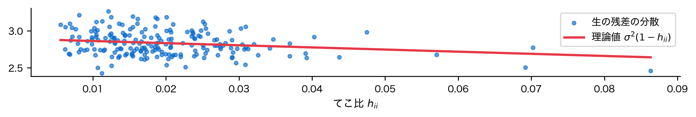
点が理論線に乗ります。生の残差はてこ比が大きい点ほど小さく出る。
生の残差 てこ比小 2.89 大 2.77
標準化残差 てこ比小 1.01 大 0.99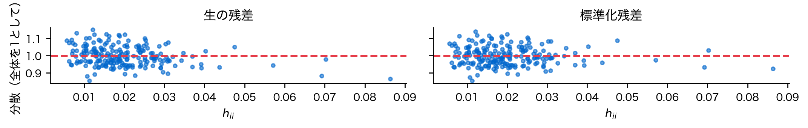
割る前は傾いていて、割ったあとは平らになります。
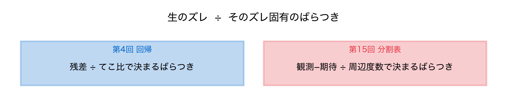
比べたいなら、それぞれのばらつきで割って揃える。 場面が変わっても型は同じです。
同じ型でも、補正の効き方は場面によってまるで違います。
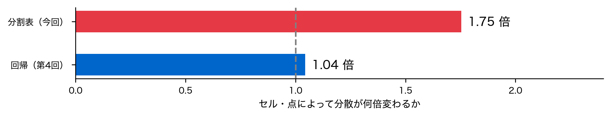
回帰は n \gg p でてこ比が小さく、補正は数パーセント。分割表では2倍変わります。 だから回帰では省略しても実害が小さく、分割表では基準そのものが壊れます。
調整済み残差の分散 = 1.009
|値|>2 の割合 = 4.5%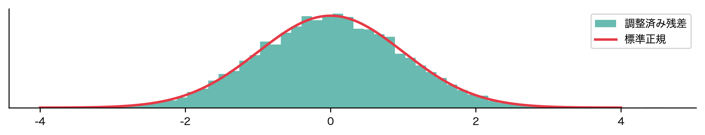
山が重なりました。 ±2 を超えるのも約 5%。これで基準が使えます。
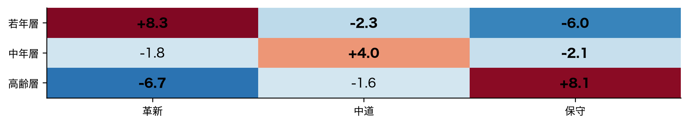
関連が無ければ標準正規に従うので、±2 を超えるのは約5%しか起きない。 太字のセルが「偶然では説明しにくい」ところです。
ここで注意が要ります。±2 の 5% は「1セルあたり」の話です。
眺めた回数を数えていないと、偶然を発見と取り違えます。
関連のないデータで「±2 を超えるセルが1つでもある」確率を測ります。
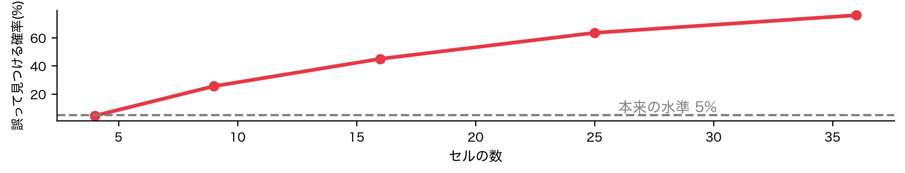
関連が無いのに、セルが増えるほど「見つかって」しまいます。
やることは単純です。見た回数を数え、基準を厳しくする。
「全セルを眺めて大きいものを報告する」のは、探した事実を隠していることになります。
この構図は第2回で一度見ました。
落とし穴①：テストセットを何度も見ると、報告する精度が楽観的になるデータを何度覗いたかは、結果の信頼性に直結します。 手法が変わっても同じです。
\chi^2=\sum_{i,j} Z_{ij}^2
読み方：カイ二乗値は、標準化残差を二乗して全セルで足したもの。
標準化残差の二乗和 = 107.99 chi2_contingency = 107.99検定統計量は、残差を集計したものにすぎません。
V=\sqrt{\frac{\chi^2}{N\,(\min(I,J)-1)}}
読み方：カイ二乗値を標本数と自由度で割って平方根を取る。0が無関連、1が完全関連。
同じ構造のデータで標本数だけ変え、p 値と V を比べます。
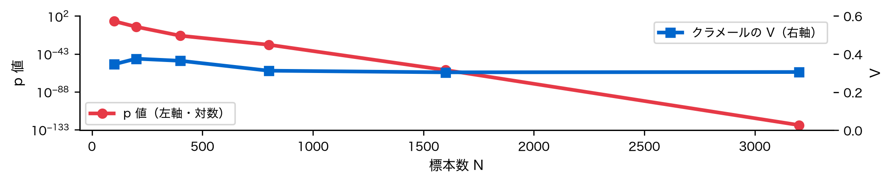
p 値は下がり続けます。V はほぼ平らです。 構造は変えていないのに。
前のスライドが示していることは、実務でいちばん誤解される点です。
「有意でした」は強さを何も語っていません。 必ず N と効果量を添えてください。
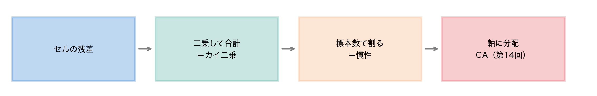
第14回で分解した慣性の正体は、セルごとの残差でした。 地図の座標も、元をたどれば1つ1つのズレからできています。
ここまでは2変数でした。3変数以上を同時に扱うにはどうするか。
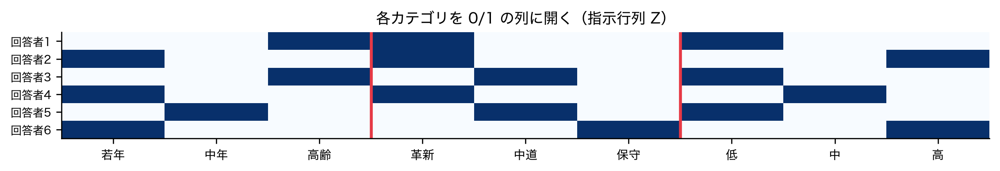
各人は9個の0/1で表されます。変数ごとに1つだけ1が立ちます。
Z^\top Z / n \;\longrightarrow\; \text{固有値分解}
読み方：指示行列の自分自身との積を標本数で割り、CA と同じように分解する。
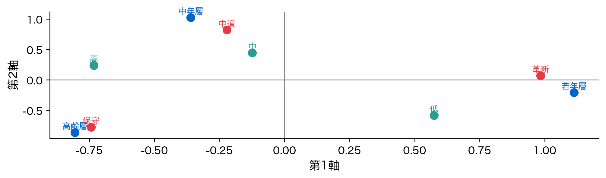
同じ側に来たカテゴリは共起しやすい。 若年・革新・低収入が一方に集まります。
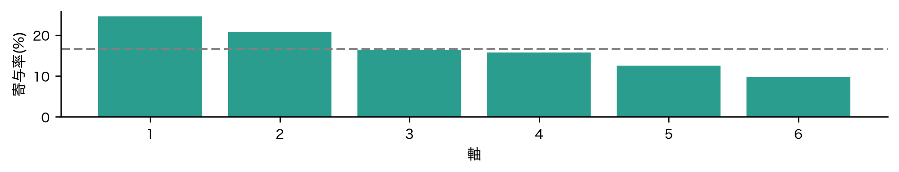
CA の第1軸が 81.5% だったのに対し、MCA は 20% 台です。 カテゴリ数が増えると軸に分散するためで、説明力が弱いわけではありません。
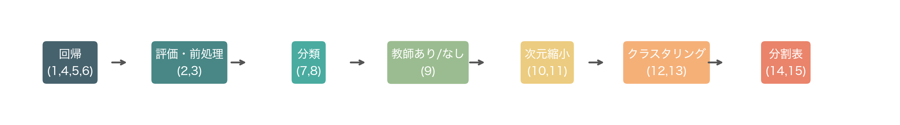
目的（予測か発見か）とデータ型（連続かカテゴリか）で手法を選ぶ——これが全15回の地図。
| 四角形への操作 | 手法 | 回 |
|---|---|---|
| y に \mathbf{X}\boldsymbol{\beta} を近づける | 重回帰・正則化・分類 | 1, 5–8 |
| 行を切る・切り回す | 分割・交差検証 | 2, 4, 8 |
| 列を揃える | 標準化・前処理 | 3 |
| 列を圧縮する | PCA・次元縮小 | 10–11 |
| 行をグループに分ける | クラスタリング | 12–13 |
| カテゴリを 0/1 に開く | CA・MCA | 14–15 |
手法は増えても四角形の絵は一枚だけ。\mathbf{X} に何をしているかから考える。
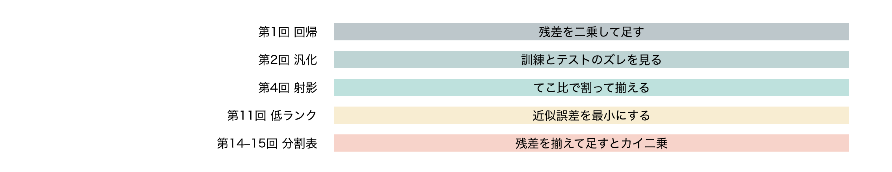
どの回も「ズレを測って、比べられる形に直す」ことをしていました。
手法は違っても、向き合い方は一貫していました。
回帰でもクラスタリングでも分割表でも、この5ステップは変わりません。 新しい手法に出会っても同じ姿勢で取り組める。 これが一番の財産です。
主要な地図はひととおり手に入りました。本当の学びはここからです。
15回お疲れさまでした。あなたのデータ分析が、ここから始まることを願っています。